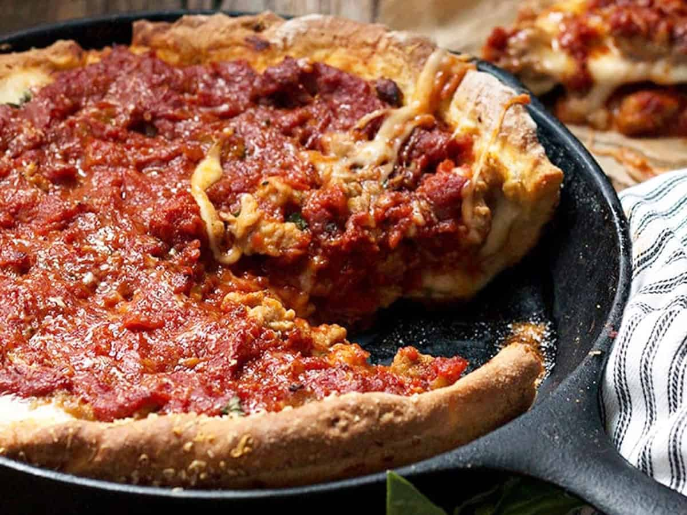

Deep Dish Cast-Iron Pizza

Our favorite deep dish pizza recipe:
Enjoy our favorite deep dish pizza with this easy recipe that is sure to bring the
whole family to the table.
Ingredients:
- Flour
- Canned Tomatoes
- Olive Oil
- Cheese
- Oregano
- Garlic
Steps:
- make flour in to a dough.
- blend your oregano, garlic, and tomatoes in a food processor
- spread dough into your lightly oiled cast iron pan
- spread your tomato sauce on to the dough and cover with a layer of cheese
- bake for 30 minutes at 425 degrees.